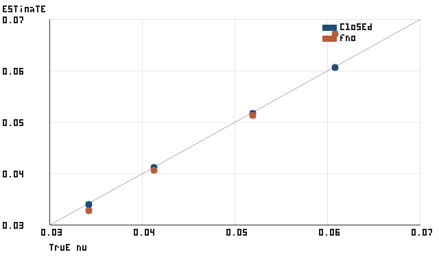
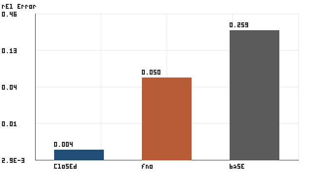
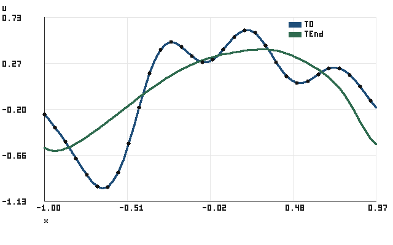

Small CPU example of sparse viscosity recovery. Not a rerun of the Stage D sensors32_bursts study.
Command: pinnforge demo burgers-inverse --output runs/burgers-inverse
| estimator | n | mean abs error | mean rel error | max rel error | failures |
|---|---|---|---|---|---|
| closed form, 32 sensors | 4 | 1.66974755e-04 | 4.05968068e-03 | 7.08700857e-03 | 0 |
| FNO sensor match | 4 | 2.55609737e-03 | 4.96650095e-02 | 1.18468303e-01 | 0 |
| training-mean constant | 4 | 1.05151535e-02 | 2.59304474e-01 | 5.41994932e-01 | 1 |
Selected epoch 40, validation relative L2 3.69904987e-02, wall clock 2.77327819e+00 seconds.


